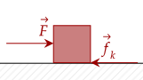
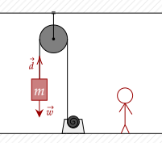
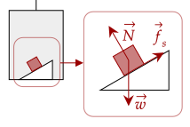
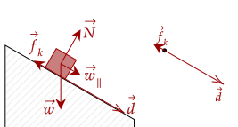

In our brief introduction to work, we only dealt with one force at a time. As we saw before, multiple forces can act on an object. Each of these forces could exert work on the object as well. Thus, we need a new quantity to show the total work done by these forces.
We define, like we did for the net force, that the net work is the work done by each of the forces acting on an object. If we write out the work for each of these forces like before, we hav the following relation.
If we factor out , we see that the other portion is the net force.
One common misconception is that if there is no net work, there is no work being exerted on the object. This is analogous to saying that since there is no net force, there are no forces acting on the object. In reality, the forces acting on the object each individually could exert work, but overall they may cancel out.

For example, imagine pushing a box with a constant velocity. You exert a force to push the box, and kinetic friction opposes this motion. The net force is zero since it is moving at constant velocity, and thus no net work occurs. However, you still do work.
Question 1
(HRK Q11.8) You slowly lift a bowling ball, moving it at constant velocity, from the floor and put it on a table. Two forces act on the ball: its weight and your upward force. These two forces add to zero so that it would seem that no work is done. On the other hand, you know that you have done some work. What is wrong?
Answer
If you examine the net force, it is indeed zero; thus, no net work is done. However, individually, your force moving up does work, and the weight of the object does work as well; albeit the weight does negative work, since it is opposite the direction of displacement.
Now, we will slowly introduce the common forces we have discussed. Since we have dealt with them before in our study of dynamics, we won't waste any time with simpler problems.
The above question shows one force, being the weight. We noted that weight points towards the Earth, or in our problems, will point downwards. Thus, anytime we move anything upwards, we exert work against gravity.

Likewise, the force of weight does negative work when an object is displaced upwards.
Exercise 1
(HRK E11.3b) To push a 25-kg crate up a 27° incline, a worker exerts a force of 120 N, parallel to the incline. As the crate slides 3.6 m, how much work is done on the crate by the force of gravity?
Solution
The box is pushed upwards, opposite the direction of gravity. Thus, gravity does negative work on the object.
We can either resolve the 3.6m to be parallel to the weight or resolve the weight to be parallel to the incline. We choose the latter. Thus, the cosine term drops out.
Note that the cosine term automatically aligns the weight to be along the direction of displacement (or vice versa). Plugging in, we have the following.
Problem 1a
(HRK P11.2a) A cord is used to lower vertically a block of mass a distance at a constant downward acceleration of . Find the work done by the cord on the block.
Solution
The net force on the object is given by its weight and the tension. We know its acceleration, which we set as negative, going down, so we can get its net force by the Law of Acceleration.
This tension is already pointing in the direction of motion. However, it does negative work since it is going down and it is pointing up. The cosine term here drops out.
Problem 1b
(HRK P11.2b) Find the work done by force of gravity on the block.
Solution
This one is much simpler. We know the force of gravity, and we know it is positive pointing in the direction of displacement. Thus, the cosine term drops out.
Of course, if we zoom out, the force of weight doesn't inherently pull things straight down, but towards each other. This fact is because of the inherent nature of gravity, that we will discuss in a later topic.
Question 1
(HRK Q11.8) Suppose that the Earth revolves around the Sun in a perfectly circular orbit. Does the Sun do any work on the Earth?
Answer
The force that the sun exerts on the Earth is gravity, and that force is a centripetal force. The centripetal force is, as we discussed, perpendicular to the velocity of the object; thus, when the object moves a displacement, it does no work.
Following our discussion previously, weight pushes objects into other objects, which causes the normal force. The normal force, as discussed, points perpendicular to the surface.
In the case where the object is displaced parallel to the surface, the angle between the normal force and the displacement is 90°, and thus no work is done by the normal force.
Hypothetically, if there was a vertical displacement, it could either be going up or down relative to the surface. If it went up, that means it is no longer in contact with the surface, and thus there is no normal force to do work.
On the other hand, if it went down, it would imply the box went into the surface. That is unphysical, so we disregard that case.

Question 2
Following the above proposition, does this mean the normal force can never do work? If it can do work, how, and in what conditions?
Answer
To make the normal force do work, one should put it on a moving surface. For example, in an elevator, the object can go up a vertical displacement and since the normal force will point in the direction of the displacement, it does work.
Another choice is to be in a moving reference frame. If you are in an elevator and see a block on a rigid surface, it can appear such that the block is moving a vertical displacement; thus, the normal force appears to do work here.
Problem 2a
The figure below shows a 2.00kg box kept at rest by static friction on an incline of 30.0°. It is placed in an elevator which moves the object up 5.00m at constant velocity. How much work has the normal force done?

Solution
Here, the normal force does work as the displacement is vertical. We first need the magnitude of the force, which is equal to the perpendicular component of the weight, given that no net force in that direction.
Now, we want to project this to be in the direction of the displacement. To convert it to the vertical component, we multiply it by cosine. We substitute it into our formula.
Now, lets substitute in our values.
Now, the surface exerts a force onto the object, and this causes friction. Recall that when we studied friction, there were two kinds, being static and kinetic friction.
Since static friction only occurs between two objects relatively at rest to one another, it can't do any work on a stationary surface, like the normal force. On a moving surface, however, it can do work.
Problem 2b
How much work has been done by static friction in the problem above?
Solution
Since the block is kept at rest by static friction, it must equal the parallel component of the weight to have no net force in the parallel component.
Now, we once again have to align this to the direction of displacement. To get the vertical component of the static friction, we use sine.
Now, lets substitute in our values.
We now deal with kinetic friction. Because it opposes the direction of relative motion, it will almost always do negative work. For example, in the figure below, the relative motion of the object is move downwards relative to the slope; thus, kinetic friction attempts to push it upwards, opposite the direction of displacement.

Exercise 3a
(LSM P7.29a) A shopper pushes a grocery cart 20.0 m at constant speed on level ground, against a 35.0 N frictional force. He pushes in a direction 25.0° below the horizontal. What is the work done on the cart by friction?
Solution
In the horizontal direction, there is no net force; the cart is at constant speed. Thus, the force of kinetic friction must equal the horizontal component of the shopper.
Now, the kinetic friction does negative work since it points opposite to where the cart is going. It also is in the same axis as the displacement, so the cosine term drops out.
Exercise 3b
(LSM P7.29e) What is the total work done on the cart?
Solution
Since the cart is moving at constant velocity, no work is being done since there is no force.
If you want to see another reason why, we will use the definition of net work. Given that the displacement is purely horizontal, forces like gravity or the normal don't do any work.
Thus, the only two forces doing work are the friction and the force applied by the shopper.
However, in the above, we have found a value for the kinetic friction. Subtituting it here, we have the following.
Exercise 4
(HRK E11.5a) A 52.3-kg trunk is pushed 5.95 m at constant speed up a 28.0° incline by a constant horizontal force. The coefficient of kinetic friction between the trunk and the incline is 0.19. Calculate the work done by the applied force.
Solution
Since the object moves at constant velocity up the incline, it means that the parallel component of the weight and kinetic friction balances out the parallel component of the horizontal force.
Now, we need the normal force, which is equal to the perpendicular weight and the perpendicular component of the horizontal force.
We substitute this for the normal force above.
Now we will do a little trick, multiplying both sides by cosine to get the parallel component of the force, which goes in the same direction as the displacement.
Lastly, let's just multiply both sides by the displacement to get the work. Then, we substitute in everything. The resulting equation is so large that it escapes the bounds of the box, so we just leave the answer instead.
Of the four forces we have discussed, being weight, the normal force, friction, and tension, they all mostly don't depend on position. The only one that (slightly) depends on position is weight, but in our current problems, we can let it not depend on position.
In the next tutorial, we will see how to deal with forces that change based on position.